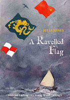
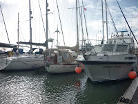
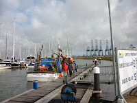
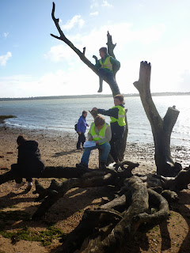

 |
| Claudia Myatt's new cover for A Ravelled Flag |
{kind=link}
I knew it was going to be a successful
outing as soon as I got the teacher's response to the weather
forecast. It was mid-October and we'd planned to take her class of
ten-year olds exploring alongside the River Stour in Suffolk. I'd
warned her already that they might get wet feet by the end of the day
but now I needed to tell her that we were also likely to encounter
rain and strong winds. Not a hurricane, you understand, but gusts
that might reach 40mph and possible heavy showers.She'll cancel, I thought to myself
gloomily.
I was part of the
way through a project for the Essex Book Festival, working with
schools in the Tendring Hundred area of Essex. My job was to talk
about the stories in my Strong Winds series, then encourage
the children to write adventures of their own. Each school wanted
something slightly different. The headteacher of this school (herself
a sailing enthusiast) suggested that the Y6 class teacher and I take
the children out for the day. The school is on the Essex side of the
River Stour, the location for A Ravelled Flag. I like to
write about imaginary events in real places and hoped that the children
would feel the same. We'd looked at the maps in The Salt-Stained
Book and A Ravelled Flag and decided to explore the
Suffolk side of the river so they could see for
themselves where key
events occurred.
{kind=link}
The wind was from
the north-north-west so I knew we'd be under the lee of the land for
most of the day. All the same I felt pessimistic as I messaged the class
teacher with the forecast. Teachers. Responsibility. Risk Assessments.
Parents. Health & Safety. She'd cry off, I was sure of it.
“Children have
been told to bring appropriate clothes for rain” she emailed back
immediately. “It
only forecasts showers so I'm sure we'll be fine.”
I discovered later that she'd been up early that morning texting all
the parents individually to ensure that every children came to school
with waterproofs, wellies and a change of footwear. If not duffers …?
From
that moment, fortune favoured us. We met at Shotley, on the tip of
the peninsula where the River Orwell meets the River Stour – a key
location for the first two stories. There's a marina with lock gates and a 24 hour control tower. I arrived first and asked
the duty lock-master if I could bring the children inside.
“Of
course. Would they like to work the lock?”
Would
they?! The lock-master explained that the bad weather and
projected high tides meant that he was already on flood alert but
still he found time to explain what he was doing to all fifteen of the
children and he ensured that each of them had the chance to open or shut
a sluice.
“Have
you any interesting yachts in at the moment?” I asked. (We'd been
identifying flags at the marina entrance.)
 |
| Nokomis (centre) |
{kind=link}
“There's
the Nokomis
– she's from Minneapolis.”
The
children and I looked at each other.
“Nokomis?
But … that's the name of the Granny in your story!”
“Are
they sensible children?” the lock-master asked the teacher. She
looked hard at her class who looked silently back at her,
sensibleness radiating from every pore. “If they're sensible, you
could take them down on the pontoons and have a look at her. Here's a
map.”
We
found Nokomis
– small,
neat and seaworthy, flying a weathered US ensign
– and
tried to imagine how far she'd sailed.
Then
we noticed a crane lifting a fishing vessel out of the water to have
a section of net cleared from its propeller.
“You
can bring the children on board if you like,” said the skipper, “Once she's back in the water again.”
Surely
now the teacher would go into negative melt-down about permissions
and life jackets and possibly even hygiene?
“We'd like to do that," she said at once. "Whereabouts
will you be?”
“Alongside
that waiting pontoon over there.”
 |
| Boarding the fishing boat |
{kind=link}
I
began to admire this teacher's style. I went with the children while she placed herself and her
teaching assistant unobtrusively either side of the steps where we climbed on board. All day I noticed how she kept them safe without any fuss, watched
without nagging. The youngsters were thus completely free to look
around, ask questions, pick things up (or not) and crowd into the
wheel house where the skipper showed them the engine controls and
navigation instruments and told us what he would be looking for when
he was out catching our suppers at sea. This was an ordinary chap, a
professional in his field, explaining his job. Not in the classroom,
not via a video but there, in person, on his own vessel. A rare opportunity.
We
took some photos and said goodbye. Sketched the mysterious schooner
and the cranes and container ships at Port of Felixstowe on the other
side of the harbour. Ate our packed lunches at a local sailing
centre, felt the force of the unchecked wind as it whistled down from
the north and accepted the invitation from the sailing centre manager
to shelter in their café from a sudden, savage shower instead of
running for our bus.
Then
we went to the beach.
 |
| Imaginations at work |
{kind=link}
The
beach at Lower Holbrook is a long thin strip of sand curving round a
shallow bay. People have lived and worked and hunted and fished here
for thousands of years but it's usually deserted now. We left the bus
and walked through the reed beds, then there it was between the trees – a surprise to
all of our party, except for me and the teaching assistant (a robust
walker and kayaker).
The
tide was high, obscuring the wide stretches of mud and the children
were enchanted. Once again the teacher and her assistant kept an
unobtrusive lookout as the children paddled, picked up small,
non-stinging jellyfish and climbed all over the monstrous fallen
trees. And all the time they and I were talking, talking, talking
about the place and what Might Happen here – either in my books or
their own.
What
if I was stranded here, where would I shelter? What if those jelly
fish turned into monsters? What if we floated away on one of these
enormous trees? What if there were pirates in the bay? What if I fell
through a hole in the sand and found myself in another world?
When
they got back to school their pens were busy. Yes, I could see the
influence of exciting interactive video games in many of the stories
but the zombies and the fast cars and the AK47s were wonderfully
mixed with hollow trees and fishing boats, jellyfish and flooding
streams. Such glorious mix ups make writing fun. They had taken the
experiences of the day and transmuted them into fifteen completely
individual adventures, editing and rewriting without complaint. They
were writing with all their senses – there was the slime on the
hands, the cold on the faces, the smell of rotting fish, the grit of
the sand and, yes, the wet feet too.
{kind=link}
{kind=link}
{kind=link}